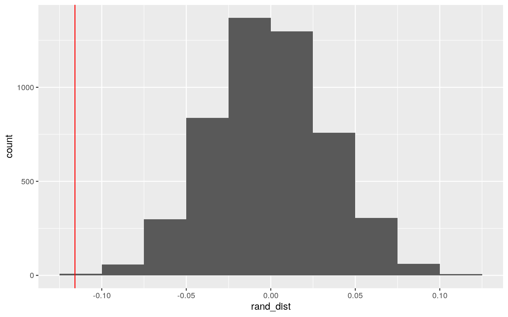
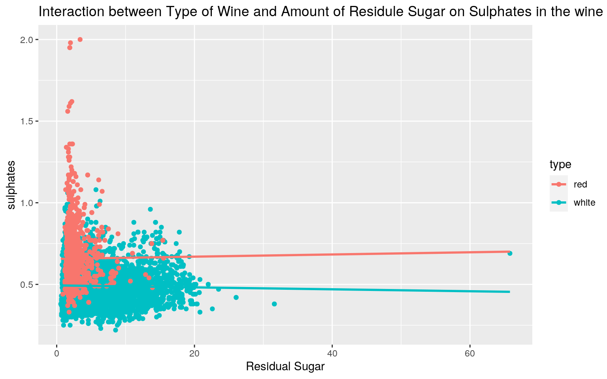
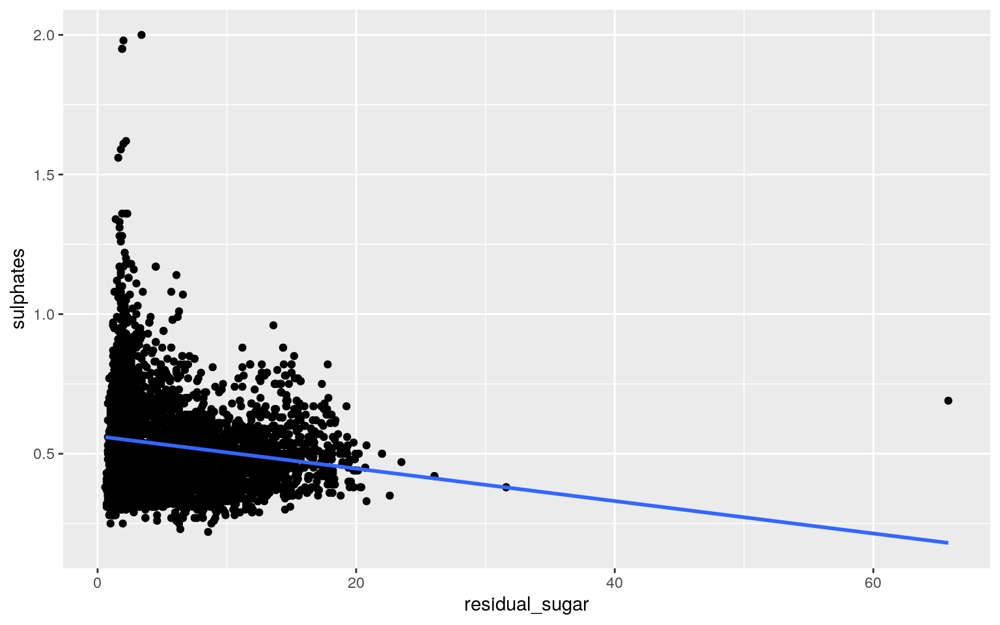
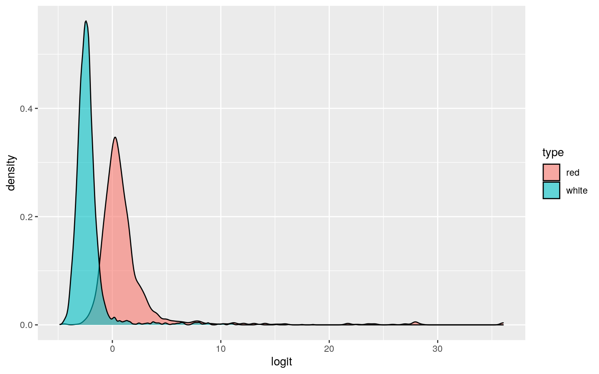
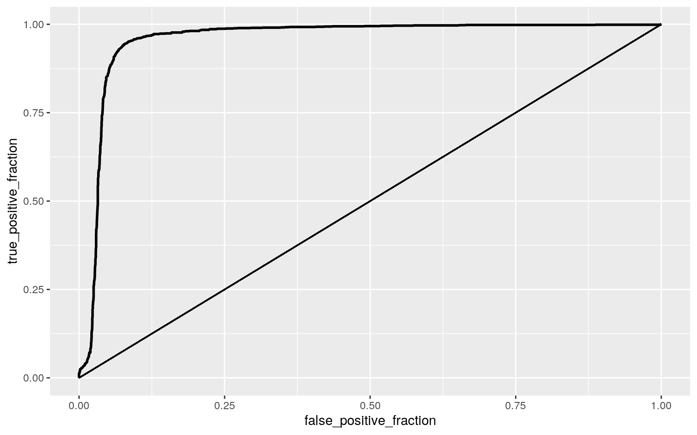

Shivani Madhav sm44452
winequality <- read_csv('/stor/home/sm44452/Project/winequality.csv')
winequalityN <- read_csv('/stor/home/sm44452/Project/winequalityN.csv')
library(lmtest)
library(sandwich)
library(plotROC)
library(tidyverse)
library(MASS)
library(glmnet)
library(ggplot2)
winequality %>% na.omit()## # A tibble: 6,469 x 9
## type volatile_acidity citric_acid residual_sugar
chlorides density pH sulphates alcohol
## <chr> <dbl> <dbl> <dbl> <dbl> <dbl> <dbl> <dbl> <dbl>
## 1 white 0.27 0.36 20.7 0.045 1.00 3 0.45 8.8
## 2 white 0.3 0.34 1.6 0.049 0.994 3.3 0.49 9.5
## 3 white 0.28 0.4 6.9 0.05 0.995 3.26 0.44 10.1
## 4 white 0.23 0.32 8.5 0.058 0.996 3.19 0.4 9.9
## 5 white 0.23 0.32 8.5 0.058 0.996 3.19 0.4 9.9
## 6 white 0.28 0.4 6.9 0.05 0.995 3.26 0.44 10.1
## 7 white 0.32 0.16 7 0.045 0.995 3.18 0.47 9.6
## 8 white 0.27 0.36 20.7 0.045 1.00 3 0.45 8.8
## 9 white 0.3 0.34 1.6 0.049 0.994 3.3 0.49 9.5
## 10 white 0.22 0.43 1.5 0.044 0.994 3.22 0.45 11
## # … with 6,459 more rowsThe data set I am using will be consisting of different features of Red and White wines. It relates to variants of the Portuguese “Vinho Verde” wine. Ever since I went to my first vineyard after turning 21, this is something I have found to be quite interesting! I got this data set from a website called Kaggle. The categorical variable “type” consists of the 2 different wines: White and Red. The “volatile acidity” variable is a measure of the amount of acetic acid in wine that causes a vinegar like taste at high levels. The next variable “citric acid” is a measure of how much citric acid is in the wine which leads to a fresh taste. The “residual sugar” variable indicates the amount of sugar left in the wine after fermentation. The “chlorides” variable indicates the amount of salt in the wine. The “density” is the density of the wine. The “pH” indicates how acidic (closer to 0) or basic (closer to 14) the wine is. The “sulphates” indicates the amount of wine additive which can contribute to sulfur dioxide gas levels which acts as an antimicrobial. The “alcohol” variable indicates the percent alcohol in the wine. In total there are 9 variables with 6,497 observations.
#MANOVA
manovawine <- manova(cbind(volatile_acidity, citric_acid, pH)~type, data=winequality)
summary(manovawine)## Df Pillai approx F num Df den Df Pr(>F)
## type 1 0.4654 1878.3 3 6473 < 2.2e-16 ***
## Residuals 6475
## ---
## Signif. codes: 0 '***' 0.001 '**' 0.01 '*' 0.05 '.' 0.1
' ' 1The MANOVA was run to see the effect of type of wine on the the volatile acidity, citric acidity, and pH of the different Portuguese wines. The results indicate that significant differences were found among each of the variables.
#Univariate ANOVA
summary.aov(manovawine)## Response volatile_acidity :
## Df Sum Sq Mean Sq F value Pr(>F)
## type 1 74.804 74.804 4806.9 < 2.2e-16 ***
## Residuals 6475 100.762 0.016
## ---
## Signif. codes: 0 '***' 0.001 '**' 0.01 '*' 0.05 '.' 0.1
' ' 1
##
## Response citric_acid :
## Df Sum Sq Mean Sq F value Pr(>F)
## type 1 4.741 4.7411 232.72 < 2.2e-16 ***
## Residuals 6475 131.912 0.0204
## ---
## Signif. codes: 0 '***' 0.001 '**' 0.01 '*' 0.05 '.' 0.1
' ' 1
##
## Response pH :
## Df Sum Sq Mean Sq F value Pr(>F)
## type 1 18.055 18.055 783.45 < 2.2e-16 ***
## Residuals 6475 149.220 0.023
## ---
## Signif. codes: 0 '***' 0.001 '**' 0.01 '*' 0.05 '.' 0.1
' ' 1
##
## 20 observations deleted due to missingnessNext an ANOVA test was run for each dependent variable from the previous MANOVA. The univariate ANOVA for all 3 variables were significantly different by wine type.
#Post-Hoc T-Test volatile acidity
pairwise.t.test(winequality$volatile_acidity, winequality$type, p.adj="none")##
## Pairwise comparisons using t tests with pooled SD
##
## data: winequality$volatile_acidity and winequality$type
##
## red
## white <2e-16
##
## P value adjustment method: none#Post-Hoc T-Test citric acidity
pairwise.t.test(winequality$citric_acid, winequality$type, p.adj="none")##
## Pairwise comparisons using t tests with pooled SD
##
## data: winequality$citric_acid and winequality$type
##
## red
## white <2e-16
##
## P value adjustment method: none#Post-Hoc T-Test pH
pairwise.t.test(winequality$pH, winequality$type, p.adj="none")##
## Pairwise comparisons using t tests with pooled SD
##
## data: winequality$pH and winequality$type
##
## red
## white <2e-16
##
## P value adjustment method: noneAll 3 of the variables had a p-value that was less than 2e-16 indicating it is close to 0. Since it is less than .05, this indicates a significant value. This means that red and white wine significantly differ in volatile acidity, citric acidity, and pH.
#Type-1 Error
1-(1-0.05)^7## [1] 0.3016627A total of 7 different hypothesis were run (1 Manova, 3 Anova, and 3 t-test), so the probability of at least one Type 1 error occurring was 0.3016627.
#Bonferroni Correction
0.05/7## [1] 0.007142857The Bonferroni Correction adjusted the significance level so that the Type 1 error is kept at .05. The new adjusted significance level is .007142857.
#Adjusted Post-Hoc T-tests with Bonferroni Correction
pairwise.t.test(winequality$volatile_acidity, winequality$type, p.adj="bonf")##
## Pairwise comparisons using t tests with pooled SD
##
## data: winequality$volatile_acidity and winequality$type
##
## red
## white <2e-16
##
## P value adjustment method: bonferronipairwise.t.test(winequality$citric_acid, winequality$type, p.adj="bonf")##
## Pairwise comparisons using t tests with pooled SD
##
## data: winequality$citric_acid and winequality$type
##
## red
## white <2e-16
##
## P value adjustment method: bonferronipairwise.t.test(winequality$pH, winequality$type, p.adj="bonf")##
## Pairwise comparisons using t tests with pooled SD
##
## data: winequality$pH and winequality$type
##
## red
## white <2e-16
##
## P value adjustment method: bonferroniAfter using the Bonferroni correction and adjusting the significance level, the differences between red and white wine stayed the same for each variable as before. This probably indicates that all the assumptions for the ANOVA test were met. However, the assumptions of the MANOVA test might not have been met since there are so many assumptions. No extreme univariate or multivariate outliers, Homogeneity of within-group covariance matrices, and multivariate normality of DVs are just some of the extra assumptions the test requires which make it hard to find a dataset fitting all the requirements.
Null and ALternative Hypothesis : Null (Ho): The mean alcohol percentage is the same for white and red wines. Alternative (Ha): The mean alcohol percentage is different for white and red wines.
#Mean Difference test
#Test Statistic
mean_difference <-mean(winequality[winequality$type=="white",]$alcohol)~mean(Cwinequality[winequality$type=="red",]$alcohol)
#Permutation Loop
rand_dist<-vector()
for(i in 1:5000){
new<-data.frame(alcohol=sample(winequality$alcohol),type=winequality$type)
rand_dist[i]<-mean(new[new$type=="white",]$alcohol)- mean(new[new$type=="red",]$alcohol)}
#Independent T-Test
t.test(data=winequality, alcohol~type)##
## Welch Two Sample t-test
##
## data: alcohol by type
## t = -2.859, df = 3100.5, p-value = 0.004278
## alternative hypothesis: true difference in means is not
equal to 0
## 95 percent confidence interval:
## -0.15388669 -0.02868117
## sample estimates:
## mean in group red mean in group white
## 10.42298 10.51427The p-value is .004278 which is below .05 meaning that we can reject the null hypothesis. This means that the mean alcohol percentage is significantly different for white and red wines based off of the sample in the dataset.
#Plot
ggplot(data.frame("rand_dist" = as.numeric(rand_dist)), aes(x=rand_dist)) +
geom_histogram(binwidth = 0.025, boundary = 0) +
geom_vline(xintercept = quantile(rand_dist, 1e-04),col="red") Based on the plot, the mean difference lies on the far left indicating a low likelihood of there being no difference in mean between the two groups.
#Mean-Centering Numeric Variables
winequalityN$residual_sugar_c <- winequalityN$residual_sugar - mean(winequalityN$residual_sugar, na.rm = T)
winequalityN$sulphates_c <- winequalityN$sulphates - mean(winequalityN$sulphates, na.rm = T)
#Linear Regression with Interaction
fit1 <-lm(sulphates ~ type * residual_sugar, data = winequality)
summary(fit1)##
## Call:
## lm(formula = sulphates ~ type * residual_sugar, data =
winequality)
##
## Residuals:
## Min 1Q Median 3Q Max
## -0.32758 -0.08895 -0.02051 0.06067 1.34134
##
## Coefficients:
## Estimate Std. Error t value Pr(>|t|)
## (Intercept) 0.6563754 0.0066988 97.984 <2e-16 ***
## typewhite -0.1627718 0.0073358 -22.189 <2e-16 ***
## residual_sugar 0.0006707 0.0023072 0.291 0.771
## typewhite:residual_sugar -0.0012646 0.0023361 -0.541
0.588
## ---
## Signif. codes: 0 '***' 0.001 '**' 0.01 '*' 0.05 '.' 0.1
' ' 1
##
## Residual standard error: 0.13 on 6487 degrees of freedom
## (6 observations deleted due to missingness)
## Multiple R-squared: 0.2375, Adjusted R-squared: 0.2371
## F-statistic: 673.4 on 3 and 6487 DF, p-value: < 2.2e-16When there is no interaction between type of wine and residual sugar, the intercept estimate of 0.6563754 is the average amount of sulphates. The coefficient estimate of -.1627718 is how much the average amount of sulphates decreases when the type of wine is white. The coefficient estimate of 0.0006707 is how much the average amount of sulphates increases with the increase in residual sugar. The coefficient of typewhite:residual_sugar is how much average sulphates will increases if the type of wine was white and the residual sugar decreases (-0.0012646).
#Plotting Regression
ggplot(winequality, aes(x=residual_sugar, y=sulphates, group=type))+geom_point(aes(color=type))+
geom_smooth(method="lm",se=F,fullrange=T,aes(color=type))+ ggtitle("Interaction between Type of Wine and Amount of Residule Sugar on Sulphates in the wine") + xlab("Residual Sugar")
#Proportion of Variation
summary(fit1)##
## Call:
## lm(formula = sulphates ~ type * residual_sugar, data =
winequality)
##
## Residuals:
## Min 1Q Median 3Q Max
## -0.32758 -0.08895 -0.02051 0.06067 1.34134
##
## Coefficients:
## Estimate Std. Error t value Pr(>|t|)
## (Intercept) 0.6563754 0.0066988 97.984 <2e-16 ***
## typewhite -0.1627718 0.0073358 -22.189 <2e-16 ***
## residual_sugar 0.0006707 0.0023072 0.291 0.771
## typewhite:residual_sugar -0.0012646 0.0023361 -0.541
0.588
## ---
## Signif. codes: 0 '***' 0.001 '**' 0.01 '*' 0.05 '.' 0.1
' ' 1
##
## Residual standard error: 0.13 on 6487 degrees of freedom
## (6 observations deleted due to missingness)
## Multiple R-squared: 0.2375, Adjusted R-squared: 0.2371
## F-statistic: 673.4 on 3 and 6487 DF, p-value: < 2.2e-16The proportion of variation in sulphates that is explained by the model is approximately 0.2375. The adjusted R squared value of 0.2371 very similar as well.
#Checking Assumptions
resid <-fit1$residuals
fitvalue <- fit1$fitted.values
#Normality Shapiro-Wilk Test
shapiro.test(resid[0:5000])##
## Shapiro-Wilk normality test
##
## data: resid[0:5000]
## W = 0.91172, p-value < 2.2e-16#Linearity
ggplot(winequality, aes(x=residual_sugar, y=sulphates)) + geom_point() + geom_smooth(method = "lm", se=F)
#Homoskedasticity Breuch-Pagan Test
bptest(fit1)##
## studentized Breusch-Pagan test
##
## data: fit1
## BP = 98.172, df = 3, p-value < 2.2e-16The Shapiro Wilk test gives a p-value less than .05 indicating that the results are significant and normality is rejected. The relationship between the 2 variables residual sugars and sulphates seems to be linear according to the graph.A ccording to the Breusch-Pagan Test, the null hypothesis of homoskedasticity was rejected since the p-value is significant. Overall, the assumptions for linearity is somewhat met, but the assumptions for homoskedasticity and the assumptions for normality were not met.
#Heteroskedasticity Robust SE
coeftest(fit1, vcov = vcovHC(fit1))##
## t test of coefficients:
##
## Estimate Std. Error t value Pr(>|t|)
## (Intercept) 0.65637538 0.00804014 81.6373 <2e-16 ***
## typewhite -0.16277178 0.00850837 -19.1308 <2e-16 ***
## residual_sugar 0.00067067 0.00249341 0.2690 0.788
## typewhite:residual_sugar -0.00126465 0.00251459 -0.5029
0.615
## ---
## Signif. codes: 0 '***' 0.001 '**' 0.01 '*' 0.05 '.' 0.1
' ' 1After redoing the regression with heteroskedasticity robust standard errors since homoskedasticity was not met, the t-values changed a little. The significance did not change for any variables though.
#Bootstrapped SE
samp_dist<-replicate(5000, {
boot_dat<-boot_dat<-winequalityN[sample(nrow(winequalityN),replace=TRUE),]
fit2<-lm(sulphates_c ~ type * residual_sugar, data=boot_dat)
coef(fit2)})
samp_dist%>%t%>%as.data.frame%>%summarize_all(sd)## (Intercept) typewhite residual_sugar
typewhite:residual_sugar
## 1 0.00808503 0.008583134 0.002517871 0.002536888The model was run again with the bootstrapped SE since the data was initially deemed to be non-normal. The standard errors from the bootstrapped model were approximately the same as the SE that were from the heteroskedastic and slightly lower than the original standard errors.
#data prep
winequalityN <-winequalityN %>% na.omit()%>%mutate(y=as.numeric(type=="red"))
#Log. Regress Model
fit4 <- glm(y ~ chlorides + alcohol, data = winequalityN, family = binomial)
coeftest(fit4)##
## z test of coefficients:
##
## Estimate Std. Error z value Pr(>|z|)
## (Intercept) -10.918686 0.443760 -24.605 < 2.2e-16 ***
## chlorides 83.436979 2.228045 37.449 < 2.2e-16 ***
## alcohol 0.467326 0.035258 13.255 < 2.2e-16 ***
## ---
## Signif. codes: 0 '***' 0.001 '**' 0.01 '*' 0.05 '.' 0.1
' ' 1exp(83.436979)## [1] 1.722739e+36exp(0.467326)## [1] 1.595722Controlling for alcohol percentage, there is a significant effect of type of wine on the amount of chlorides in it. Every additional increase in percentage of alcohol multiplies the odds of it being red wine by 1.722739e+36. When controlling for chlorides, there continues to be a significant effect of the type of wine in relation to the alcohol percentage, as was seen above.
#Confusion Matrix
winequalityN$prob <- predict(fit4, type = "response")
table(predict=as.numeric(winequalityN$prob>5), truth=winequalityN$y) %>% addmargins## truth
## predict 0 1 Sum
## 0 4876 1593 6469
## Sum 4876 1593 6469#Accuracy
4876/6469## [1] 0.7537486#Sensitivity
0/4876## [1] 0#Specificity
4876/6469## [1] 0.7537486#Precision
0/6469## [1] 0Based on confusion matrix, the accuracy of the model is approximately 0.7537486 which represents the number of predicted red wines that are actually red wines. The specificity is the same number. The sensitivity of the model is 0 which makes sense as there are no predicted white wines and the precision is also 0.
#Density of Log-Odds Plot
winequalityN$odds <- (winequalityN$prob)/(1-winequalityN$prob)
winequalityN$logit <- log(winequalityN$odds)
ggplot(winequalityN) + geom_density(aes(logit, fill= type), alpha=0.6)
#ROC Curve and AUC Calculation
ROCplot <- ggplot(winequalityN) +geom_roc(aes(d=y, m=prob), n.cuts = 0) + geom_segment(aes(x=0, xend=1, y=0, yend=1))
ROCplot
calc_auc(ROCplot)## PANEL group AUC
## 1 1 -1 0.9573412The calculated AUC for this model is 0.9573412 which is really good and indicates the variables are good predictors for type of wine! It represents the probability of selecting a red wine with a higher prediction than a white wine when you take both chlorides and alcohol percentage.
#Logistic Regression Model
fit5 <- glm(y ~ volatile_acidity + citric_acid + residual_sugar + chlorides + density + pH + sulphates + alcohol, data = winequalityN, family = binomial(link = "logit"))
coeftest(fit5)##
## z test of coefficients:
##
## Estimate Std. Error z value Pr(>|z|)
## (Intercept) -2.2519e+03 1.1737e+02 -19.1856 < 2.2e-16
***
## volatile_acidity 5.3838e+00 8.1161e-01 6.6335 3.278e-11
***
## citric_acid -6.8524e+00 1.0052e+00 -6.8168 9.312e-12 ***
## residual_sugar -1.2755e+00 7.3201e-02 -17.4249 < 2.2e-16
***
## chlorides 2.8829e+01 3.7168e+00 7.7566 8.725e-15 ***
## density 2.2372e+03 1.1746e+02 19.0470 < 2.2e-16 ***
## pH -7.9230e-01 7.2643e-01 -1.0907 0.2754
## sulphates 1.7409e+00 9.5078e-01 1.8310 0.0671 .
## alcohol 2.7876e+00 1.9208e-01 14.5126 < 2.2e-16 ***
## ---
## Signif. codes: 0 '***' 0.001 '**' 0.01 '*' 0.05 '.' 0.1
' ' 1#Confusion Matrix
winequalityN$prob <- predict(fit5, type ="response")
table(predict=as.numeric(winequalityN$prob>.5),truth=winequalityN$y)%>% addmargins()## truth
## predict 0 1 Sum
## 0 4843 40 4883
## 1 33 1553 1586
## Sum 4876 1593 6469#Accuracy
(4843+1553)/6469## [1] 0.9887154#Sensitivity
1553/1593## [1] 0.9748901#Specificity
4843/4876## [1] 0.9932322#Precision
1553/1586## [1] 0.9791929The accuracy calculation of 0.9887154 indicates the number of red wines that are actually red wine. The sensitivity of 0.9748901 represents the number of predicted white wines. The specificity rate includes both types of wines and is 0.9932322. The precision calculation of 0.9791929 represents the number of white wines that are actually white wines.
class_diag <- function(probs,truth){
if(is.character(truth)==TRUE) truth<-as.factor(truth)
if(is.numeric(truth)==FALSE & is.logical(truth)==FALSE) truth<-as.numeric(truth)-1
tab<-table(factor(probs>.5,levels=c("FALSE","TRUE")),factor(truth, levels=c(0,1)))
acc=sum(diag(tab))/sum(tab)
sens=tab[2,2]/colSums(tab)[2]
spec=tab[1,1]/colSums(tab)[1]
ppv=tab[2,2]/rowSums(tab)[2]
ord<-order(probs, decreasing=TRUE)
probs <- probs[ord]; truth <- truth[ord]
TPR=cumsum(truth)/max(1,sum(truth))
FPR=cumsum(!truth)/max(1,sum(!truth))
dup <-c(probs[-1]>=probs[-length(probs)], FALSE)
TPR <-c(0,TPR[!dup],1); FPR<-c(0,FPR[!dup],1)
n <- length(TPR)
auc <- sum( ((TPR[-1]+TPR[-n])/2) * (FPR[-1]-FPR[-n]))
data.frame(acc,sens,spec,ppv,auc)
}
#10-Fold CV
set.seed(1234)
k=10
data1<-winequalityN[sample(nrow(winequalityN)),]
folds<-cut(seq(1:nrow(winequalityN)),breaks=k,labels=F)
diags<-NULL
for(i in 1:k){
tenfold<-data1[folds!=i,]
test<-data1[folds==i,]
truth<-test$y
fit<-glm(y ~ volatile_acidity + citric_acid + residual_sugar + chlorides + density + pH + sulphates + alcohol,data=tenfold,family="binomial")
probs<-predict(fit,newdata = test,type="response")
diags<-rbind(diags,class_diag(probs,truth))
}
apply(diags,2,mean)## acc sens spec ppv auc
## 0.9887155 0.9743803 0.9932135 0.9793004 0.9951497According to the 10-Fold CV results, the out of sample accuracy is 0.9887155, the sensitivity is 0.9743803, the specificity is 0.9932135,the precision is 0.9793004, and the AUC is 0.9951497. The AUC increased and is still high meaning the model is a good predictor for determining the type of wine.
#LASSO
fit6 <- lm(y~., data = winequalityN, family="binomial")
y<-as.matrix(winequalityN$y)
x<-model.matrix(fit6)
cv <- cv.glmnet(x, y, family="binomial")
lasso <- glmnet(x, y, family="binomial", lambda = cv$lambda.1se)
coef(lasso)## 16 x 1 sparse Matrix of class "dgCMatrix"
## s0
## (Intercept) 6.793838
## (Intercept) .
## typewhite -14.707137
## volatile_acidity .
## citric_acid .
## residual_sugar .
## chlorides .
## density .
## pH .
## sulphates .
## alcohol .
## residual_sugar_c .
## sulphates_c .
## prob .
## odds .
## logit .Although my AUC values were high, the LASSO did not produce any non-zero variable (except for type which I cannot use for the CV). Even when running cv$lambda.min, I reached the same results.
…